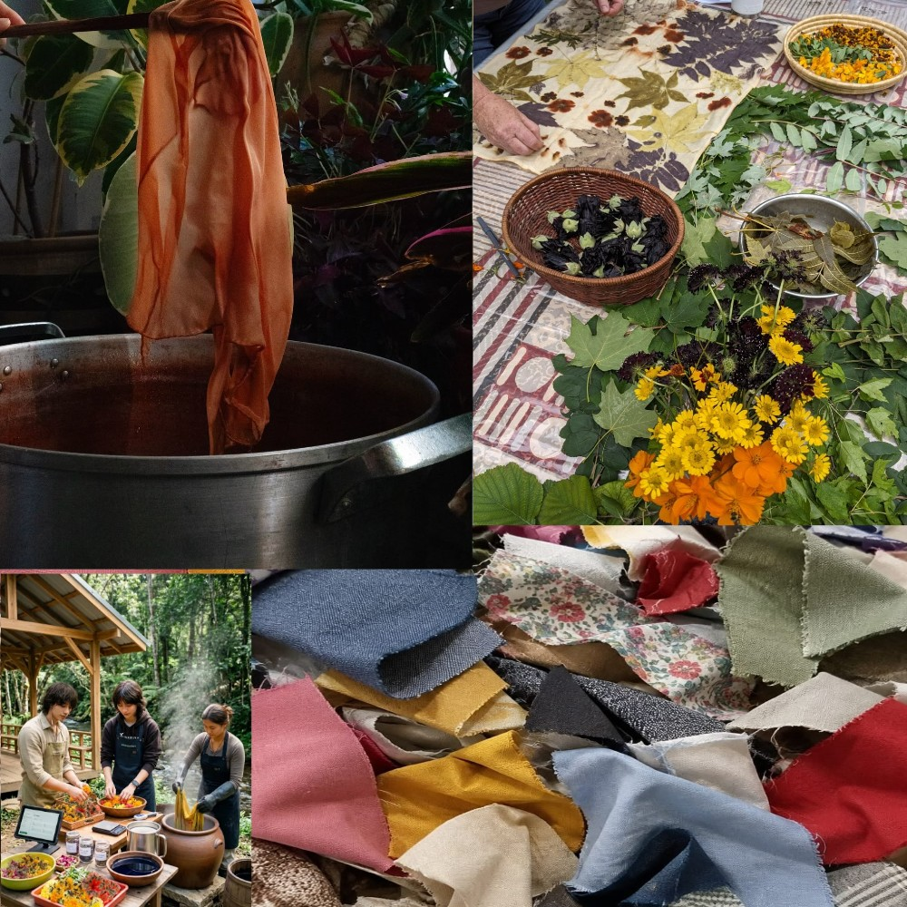

Clothes that don't cost the Earth.
Stylish everyday wear made from 100% recycled fabrics and natural, plant-based dyes, at prices everyone can afford.
Shop NowAbout GreenStitch

The fashion industry creates a lot of waste, and many young people want clothes that don't hurt the planet. GreenStitch is a new clothing company focused on zero-waste fashion.
Our t-shirts, hoodies, and pants are made from recycled fabrics and colored with plant-based dyes.
Highlights
Online Store Catalog
Browse all our clothes, pick your size, and see what each piece is made of.
Shopping Cart
Review what you want to buy and check out quickly and safely.
Our Mission Page
See how we recycle fabrics and dye them naturally, so you can trust what you buy.